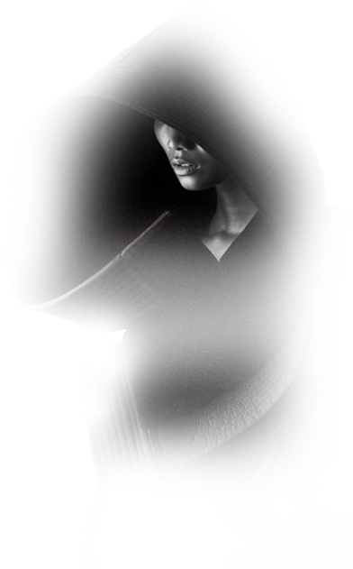

Yasiru Basnayake
This portfolio is best viewed in portrait mode or on a larger screen for the best experience.
Yasiru Basnayake
Criminal Face Generation Platform
AI-driven solution leveraging stable diffusion models to enhance forensic facial synthesis.
Earendel Pro-Track
IoT-based telescope mount for automated celestial tracking.
LUNA: Vision-based Restaurant Robot
Developing a restaurant robot using ROS and Kinect2 for autonomous navigation and interaction.
TechBot: STM/Vision-based Robot
An innovative robot featuring STM32F4 Series microcontroller, machine vision.
Cosmo Robot
an Arduino Mega 2560-based robot showcasing precise line following, wall avoidance, ramp navigation.
FoodFocus: Smart Consumption Tracker
FoodFocus tracks sugar, salt, and oil consumption, indicating daily limits. Using loadcells, Arduino, and sophisticated manipulation, it provides detailed reports and doubles as a clock with alarm features.
NeuralVoice - A Neural Interface Communication Device for Individuals with Paralysis
Empower paralyzed individuals with a device decoding neural impulses for communication. Utilizing EMG signals, ML models, LLM refinement, and TTS, it enhances social integration and mental well-being.
Analog Function Generator
Analog function generator generates sinusoidal, triangular, saw tooth, and PWM signals upto 20Khz with variable parameters. Designed using analog components, it features versatile waveform options and easy signal output.
As a second-year Electronic and Telecommunication engineering undergraduate at Univeristy of Moratuwa, I'm dedicated to mastering a range of electronic applications and developer tools. My passion lies in applying deep learning and machine vision to enhance electronic product design and embedded systems.
Areas of Interest: Deep Learning for Computer Vision, Embedded Systems, Machine Learning, Electronic Product Design
